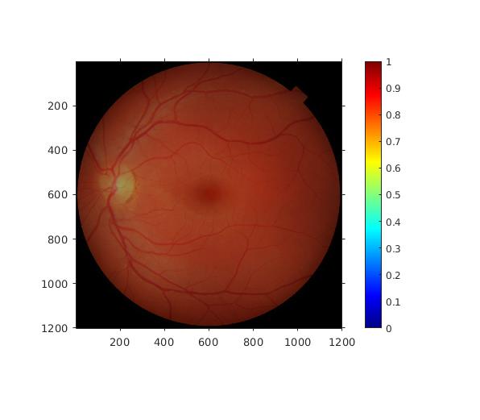
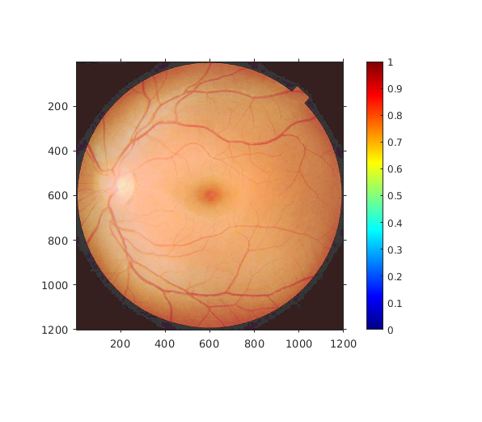

MyMainScript
tic; img1 = imread('../data/barbara.png'); img2 = imread('../data/TEM.png'); img3 = imread('../data/canyon.png'); img4 = imread('../data/retina.png'); img4ref = imread('../data/retinaRef.png'); img4m = imread('../data/retinaMask.png'); img4refm = imread('../data/retinaRefMask.png'); img5 = imread('../data/church.png'); % %% myLinearContrastStretching % figure('Name','Barbara'); % imshow(uint8(img1)); % axis on; % colormap(jet(200)); % colorbar; % % figure('Name','Contrast image Barbara'); % img1a = myLinearContrastStretching(img1); % imshow(uint8(img1a)); % axis on; % colormap(jet(200)); % colorbar; % % figure('Name','TEM'); % imshow(uint8(img2)); % axis on; % colormap(jet(200)); % colorbar; % % figure('Name','Contrast image TEM'); % img2a = myLinearContrastStretching(img2); % imshow(uint8(img2a)); % axis on; % colormap(jet(200)); % colorbar; % % figure('Name','Canyon'); % imshow(uint8(img3)); % axis on; % colormap(jet(200)); % colorbar; % % figure('Name','Contrast image Canyon'); % img3a = myLinearContrastStretching(img3); % imshow(uint8(img3a)); % axis on; % colormap(jet(200)); % colorbar; % % figure('Name','Church'); % imshow(uint8(img5)); % axis on; % colormap(jet(200)); % colorbar; % % figure('Name','Contrast image Church'); % img5a = myLinearContrastStretching(img5); % imshow(uint8(img5a)); % axis on; % colormap(jet(200)); % colorbar; % % %% myHE % figure('Name','Barbara'); % imshow(uint8(img1)); % axis on; % colormap(jet(200)); % colorbar; % % figure('Name','Contrast image Barbara'); % img1b = myHE(img1); % imshow(uint8(img1b)); % axis on; % colormap(jet(200)); % colorbar; % % figure('Name','TEM'); % imshow(uint8(img2)); % axis on; % colormap(jet(200)); % colorbar; % % figure('Name','Contrast image TEM'); % img2b = myHE(img2); % imshow(uint8(img2b)); % axis on; % colormap(jet(200)); % colorbar; % % figure('Name','Canyon'); % imshow(uint8(img3)); % axis on; % colormap(jet(200)); % colorbar; % % figure('Name','Contrast image Canyon'); % img3b = myHE(img3); % imshow(uint8(img3b)); % axis on; % colormap(jet(200)); % colorbar; % % figure('Name','Church'); % imshow(uint8(img5)); % axis on; % colormap(jet(200)); % colorbar; % % figure('Name','Contrast image Church'); % img5b = myHE(img5); % imshow(uint8(img5b)); % axis on; % colormap(jet(200)); % colorbar; %%myHM figure('Name','Retina'); imshow(uint8(img4)); axis on; colormap(jet(200)); colorbar; figure('Name','Retina HE'); img4ce = myHE(img4); imshow(uint8(img4ce)); axis on; colormap(jet(200)); colorbar; figure('Name','Retina HM'); img4cm = myHM(img4(img4m==1),img4ref(img4refm==1)); imshow(uint8(img4cm)); axis on; colormap(jet(200)); colorbar; %%end toc;
Warning: Image is too big to fit on screen; displaying at 33% Warning: Image is too big to fit on screen; displaying at 33% Warning: Image is too big to fit on screen; displaying at 0% Elapsed time is 2.159032 seconds. 